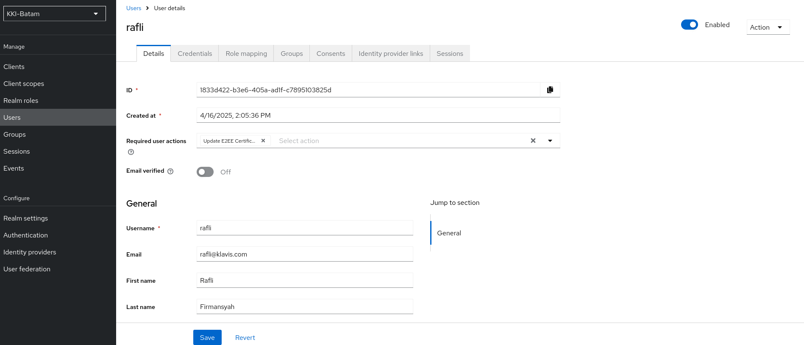

Register Client Application and User
Register Client Application
As part of SSO protocol, client application must be registered to Keycloak before getting access from Keycloak.
To register a client, click on Clients button on the left tab and click on Create client.

Then, on the client page, fill client information such as client name and client redirect uri. Here is a sample of client that is registered to Keycloak.
Click on Save button.
If you enable Client authentication previously, a client credential is generated. There are several types of credentials. In current configuration, we already tested with Client Id and Secret type. The credential can be used by backend application to create a secure channel to Keycloak.
Register User
Now, let’s create a new user by clicking on Users button on the left tab.
Click on Add user and you will be directed to user’s registration page.
Drop down the Required user actions and choose Update E2EE certificate.
Let Email verified disabled and fill the rest of user data.
Click on Create button.
Click on Save button.

After the setup process is complete, it’s time to activate the user and then try to log in. If it succeeds, it means strong SSO authentication has been deployed successfully.